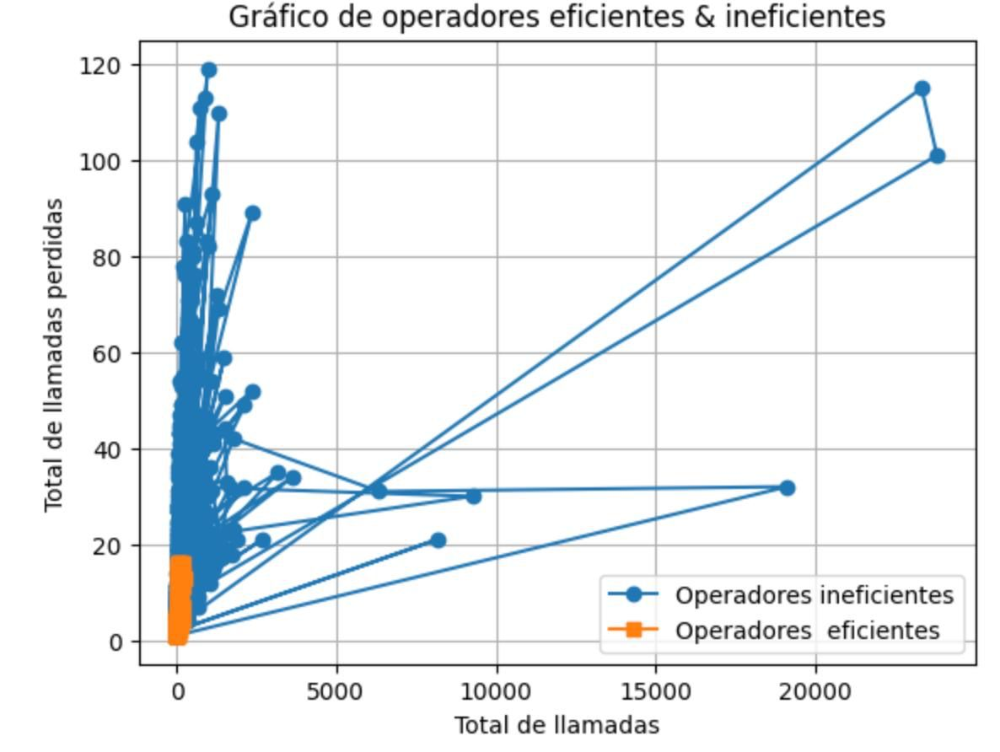

En los servicios de telecomunicaciones, la calidad de las interacciones entre los operadores y los clientes es fundamental para garantizar una experiencia satisfactoria. No todos los operadores trabajan con el mismo nivel de eficiencia; Factores como una alta cantidad de llamadas perdidas, tiempos de espera prolongadoS, pueden ser indicadores de ineficiencia.
Los datasets contienen información sobre el uso del servicio de telefonía virtual CallMeMaybe. El análisis de estos datos permitirá a los supervisores tomar decisiones informadas, optimizar el rendimiento del equipo y mejorar la calidad del servicio ofrecido.
Llevar a cabo el análisis exploratorio de datos: Comprender la estructura del dataset(tipos de llamadas entrantes, salientes, internas, tiempos de espera, llamadas perdidas, identificar posibles anomalías en los datos.
Identificar operadores ineficaces Definir los criterios para poder clasificar a un operador como ineficaz.
Pruebas de hipótesis Estadística: Verificar si los operadores ineficaces tienen un impacto significativo en el desempeño general del servicio.
A través del análisis de clústeres, se logró segmentar a los operadores en grupos con características similares de desempeño:
El análisis permitió aislar al grupo de operadores que requieren intervención inmediata (formación, supervisión o cambios de proceso), debido a sus métricas elevadas en:
Tiempo promedio de espera.
Porcentaje de llamadas perdidas.
Se detectaron ciertos operadores con un desempeño deficiente. Los operadores menos eficaces mostraron una cantidad significativamente mayor de llamadas no atendidas.
tiempos de espera prolongados, los operadores ineficaces están asociados con una mayor insatisfacción del cliente, debido a tiempos de espera prolongados y menor capacidad de resolución en llamadas entrantes.
Se realizo una distribución por clústeres para poder segmentar los operadores de acuerdo a su desempeño. Las diferencias observadas entre los operadores eficaces e ineficaces son significativas.
Recomendaciones
Como analista de datos requerimos contar con mayor información. Por ejemplo, el horario de las llamadas; esto nos permitirá obtener las horas pico donde los usuarios realizan más llamadas y de esta manera obtener métricas que generen más valor para la toma de decisiones.
Notificaciones proactivas: Implementar un sistema de notificaciones para detectar problemas de eficiencia de forma temprana, que genere un reporte sobre el desempeño de los operadores.
Cluster de operadores segun su eficiencia
Grafico de operadores eficientes e ineficientes